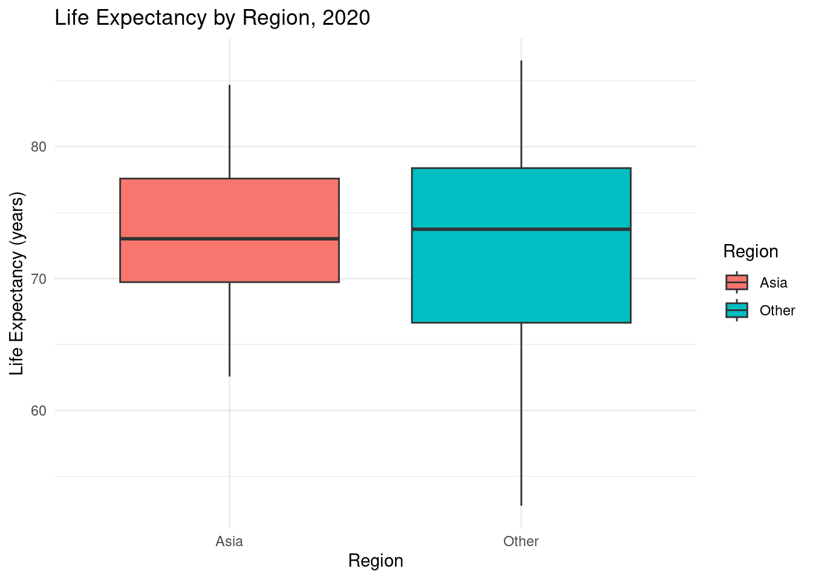
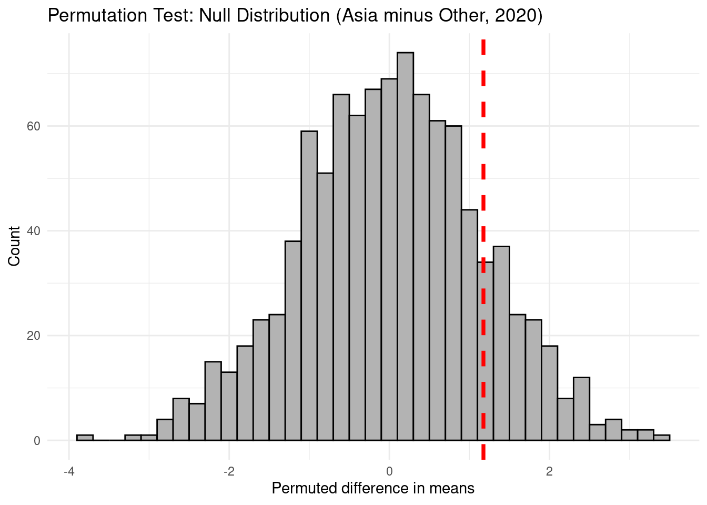

This analysis asks: Was average life expectancy in Asian countries during the COVID-19 pandemic (2020) significantly different from that in all other countries? This question is relevant because 2020 marked an unprecedented disruption in global health, with potentially unequal impacts across world regions.
Filter for 2020 life expectancy data and label each country as “Asia” or “Other.”
Calculate the observed difference in mean life expectancy between these groups.
Write a function to permute group labels and return the difference, then map it over 1000 simulations.
Visualize the observed difference and the permutation null distribution.
Interpret the results and assess significance.
Methods
A permutation test is used to compare mean life expectancy in Asia and the rest of the world. This non-parametric approach does not assume normality and is robust to outlier or heterogeneous data at the country level.
Observed statistic: The true difference in group means.
Null distribution: Created by randomly shuffling region labels (Asia/Other) and recomputing the means, simulating the null scenario of no real difference.
Empirical p-value: Proportion of simulated differences as large or larger than observed.
Description of functions
A custom function, calc_group_diff(), calculates the mean difference in life expectancy between Asia and Other. This function is called across 1000 label-shuffles using map_dbl().
The empirical p-value is the proportion of simulated differences that are as or more extreme than the observed. This quantifies the evidence supporting or refuting the idea that Asia’s life expectancy advantage (or disadvantage) is unlikely to be due to chance.
Code
library(tidytuesdayR)library(tidyverse)# Load life_expectancy dataset directly from Githublife_expectancy <- readr::read_csv('https://raw.githubusercontent.com/rfordatascience/tidytuesday/main/data/2023/2023-12-05/life_expectancy.csv')life_expectancy_different_ages <- readr::read_csv('https://raw.githubusercontent.com/rfordatascience/tidytuesday/main/data/2023/2023-12-05/life_expectancy_different_ages.csv')life_expectancy_female_male <- readr::read_csv('https://raw.githubusercontent.com/rfordatascience/tidytuesday/main/data/2023/2023-12-05/life_expectancy_female_male.csv')# Official list of Asian countries (UN/Worldometers, 48 total)asia_countries <-c("India", "China", "Indonesia", "Pakistan", "Bangladesh", "Japan", "Philippines", "Vietnam","Iran", "Turkey", "Thailand", "Myanmar", "South Korea", "Iraq", "Afghanistan","Yemen", "Uzbekistan", "Malaysia", "Saudi Arabia", "Nepal", "North Korea", "Syria", "Sri Lanka","Kazakhstan", "Cambodia", "Jordan", "United Arab Emirates", "Tajikistan", "Azerbaijan", "Israel","Laos", "Turkmenistan", "Kyrgyzstan", "Singapore", "Lebanon", "State of Palestine", "Oman", "Kuwait","Georgia", "Mongolia", "Qatar", "Armenia", "Bahrain", "Timor-Leste", "Cyprus", "Bhutan", "Maldives", "Brunei")# Filter for target year and assign grouple_dat <- life_expectancy %>%filter(Year ==2020) %>%mutate(region =if_else(Entity %in% asia_countries, "Asia", "Other"))# FUNCTION: Calculate group mean differencecalc_group_diff <-function(df, col_group ="region", col_value ="LifeExpectancy") { means <- df %>%group_by(.data[[col_group]]) %>%summarize(mean_val =mean(.data[[col_value]], na.rm=TRUE), .groups ="drop") means$mean_val[means[[col_group]] =="Asia"] - means$mean_val[means[[col_group]] =="Other"]}# Observed statisticobserved_diff <-calc_group_diff(le_dat)# FUNCTION: Permute group labels, calculate differencepermute_and_diff <-function(df) { shuffled <- df %>%mutate(region =sample(region))calc_group_diff(shuffled)}# Set seed for reproducibilityset.seed(47)# Run simulation with purrr::map()B <-1000perm_diffs <-map_dbl(1:B, ~permute_and_diff(le_dat))# Calculate empirical p-valuep_val <-mean(abs(perm_diffs) >=abs(observed_diff))# Calculate and print resultscat("Observed mean difference (Asia - Other):", round(observed_diff, 2), "\n")
Observed mean difference (Asia - Other): 1.17
cat("Empirical p-value:", round(p_val, 4), "\n")
Empirical p-value: 0.291
Results and Visualization
Results Interpretation:
The observed mean difference in life expectancy between Asia and the rest of the world in 2020 is 1.17 years, with Asia having the higher mean. However, the empirical p-value from the permutation test is 0.291.
Since the empirical p-value is 0.291 (much greater than 0.05), we fail to reject the null hypothesis. This means the observed difference in life expectancy between Asia and the rest of the world could easily have occurred by random chance, so we do not have strong evidence for a real difference in this year.
# Plot: Boxplot of data by regionggplot(le_dat, aes(x=region, y=LifeExpectancy, fill=region)) +geom_boxplot() +labs(title ="Life Expectancy by Region, 2020",y ="Life Expectancy (years)", x ="Region",fill ="Region") +theme_minimal()

Description for Boxplot: Life Expectancy by Region (2020)
This boxplot compares country-level life expectancy across Asia and the rest of the world for the year 2020. The median (middle line) and the central spread (interquartile range) are similar for both groups, with “Other” countries having a slightly higher median. The ranges largely overlap, suggesting that most countries, regardless of region, have comparable average life expectancies. This visual indicates no dramatic difference in life expectancy distribution between Asia and other regions for this year.
# Plot: Permutation test distributiontibble(sim_diff = perm_diffs) %>%ggplot(aes(x = sim_diff)) +geom_histogram(binwidth=0.2, fill="grey70", color="black") +geom_vline(xintercept=observed_diff, color="red", linetype="dashed", size=1.3) +labs(title ="Permutation Test: Null Distribution (Asia minus Other, 2020)",x ="Permuted difference in means", y ="Count") +theme_minimal()

Permutation Test Null Distribution
This histogram shows the distribution of mean life expectancy differences (Asia minus Other) obtained by randomly shuffling region labels 1,000 times—a simulation of what we might expect by chance. The red dashed line marks the actual observed difference between the two regions. Because this observed statistic falls well within the main cluster of the permutation distribution, it suggests that the observed difference is not unusual under the null hypothesis. Thus, we do not have strong statistical evidence to claim a genuine difference in mean life expectancy between Asia and the rest of the world in 2020.